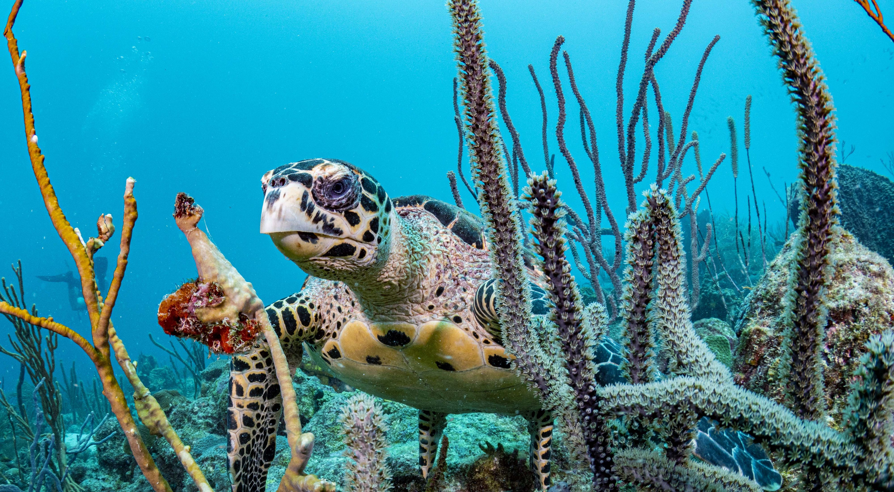

The Prettiest Island in the Carribbean
 Barbados is a coral island, pushed out of sea by volcanic activity in a far away time. On the West Coast, beaches of fine white sand stretch along a blue-green sea. Coral reefs fringe coast providing excellent snorkeling and Scuba Diving. Along the East Coast a lively surf is blown briskly by the strong and constant trade winds and the waves pound against a rocky shore. The constant breeze of the trade winds gives the island a mild and pleasant tropical climate.
When you visit, you will see it is mostly a flat coral island with excellent beaches, but there are also rolling hills and many deep ridges and gullies, with an interesting distribution of flora and fauna. Within the coral core there is a vast array of caves and underground lakes which provide an excellent supply of drinking water that is amongst the purest in the world. Geologically Barbados is unique, being actually two land masses that merged together over the years. This and other anomalies make this Caribbean island quite phenomenal, and there are geological structures that you will find only here.